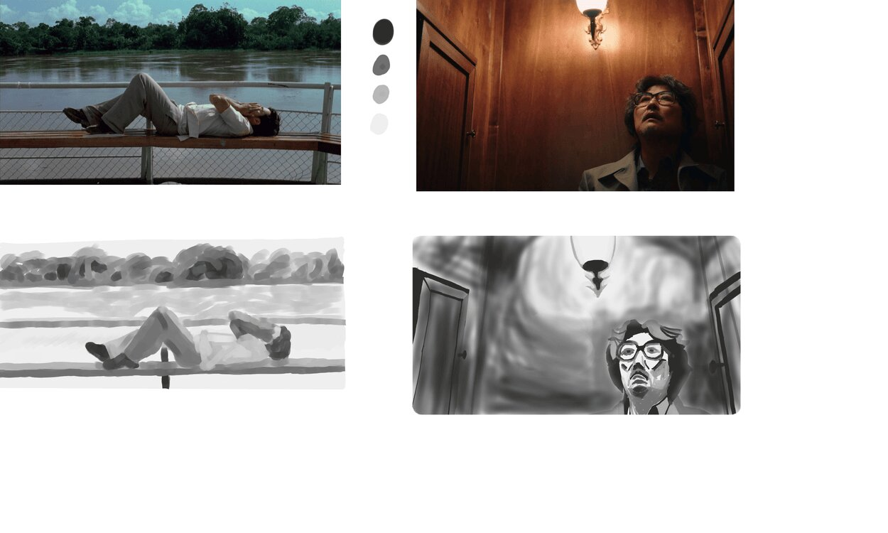

Value Practice

About This Image
This drawing was drawing 2 months ago while I was practicing the fundamentals of values in pictures to understand the focus of these movie images and to help portray the emotion or highlight of the image. The image on the left is from Motorcycle Diaries and I forget which movie is on the right.
Why JPG Format?
Since this image focuses more on the value of the sketches and not the color, using JPG for this was fine since this drawing focuses on the light and the dark.
Image source: Original Drawing by [The Student]